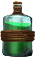
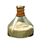
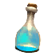

Эликсир выносливости
Предметы / Ресурсы
Открыть в интерактивной вики →
| Цена | 100 |
|---|---|
| Вес | 0 |
Описание
Выносливость: +200
| Чтобы использовать, нажмите на предмет в окне эликсиров. Предмет нельзя передать другим игрокам. |
Рецепт
Создание: 1x

Средний ангидрид + 5x
Бутыль морской воды + 3.2kГде создать

Стоимость
9xЭликсир выносливости за 1  Платина
Платина
ПлатинаСпособы получения
|
Изготовление
Изготавливает Лукас Ландау в Поместье Ландау за 3 200 золота после доставки ингредиентов:
|